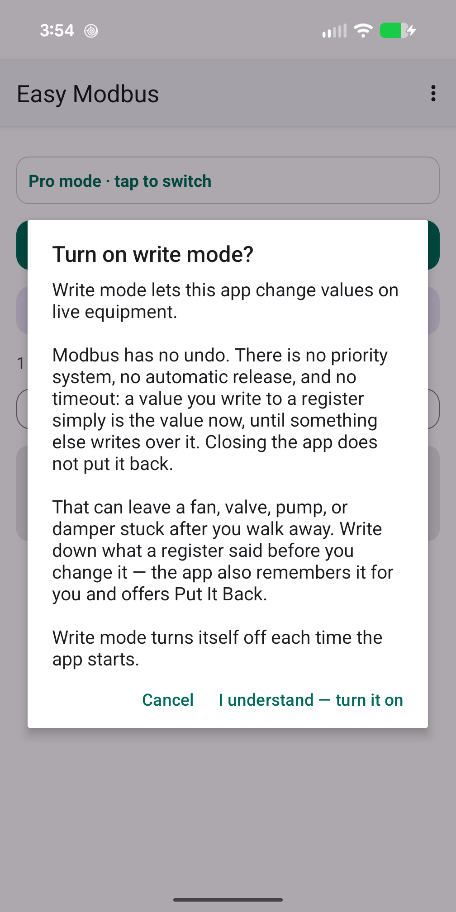
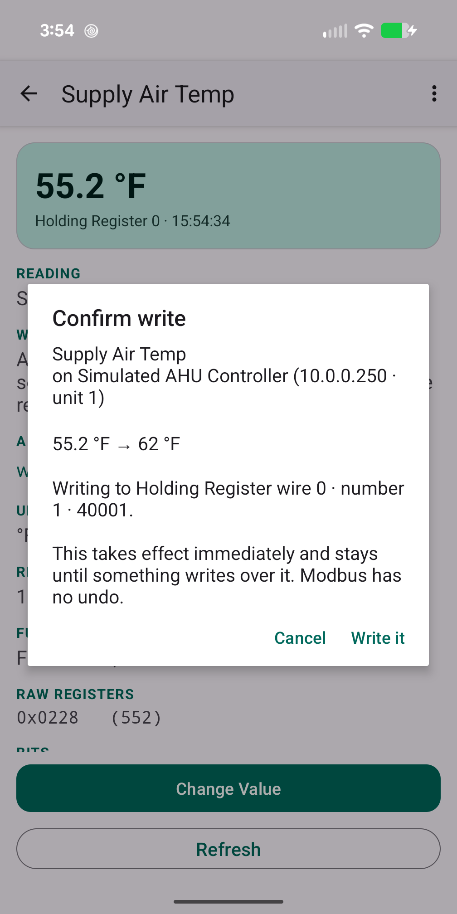

How do I write to a Modbus register with Easy Modbus, and put it back afterwards?
Updated 18 September 2026
Turn on Write mode from the menu and accept the warning. Open the reading, choose to change its value, enter the new one, and confirm against the summary. The app writes it, reads it back and logs it. When you are done, use Put It Back: the app remembered what the register said the first time it saw it this session, and offers to write that value again. Modbus has no priority levels, no release and no timeout — whatever you write simply is the value until something overwrites it — so Put It Back is the only undo you get.
Why writing to Modbus deserves more care than BACnet
BACnet keeps a priority array: your override sits in a slot, and releasing the slot hands control back. Modbus has nothing of the kind. A holding register is a box with a number in it. Write 55 and it contains 55, full stop, until the equipment's own logic or another system writes something else — and many devices' logic never will. Read is it safe to write to a Modbus register? before touching anything on live plant.
Step 1 — Turn on write mode
Write mode is off every time the app starts and is not remembered. Open the menu, tap Write mode, read the warning and accept it. Until then no screen in the app offers a write.

Step 2 — Set limits, if you can
A reading can carry a minimum and maximum. Set them on anything you are going to write to — a setpoint that should live between 60 and 80, a speed reference that must stay under 100%. The app refuses a write outside those bounds before it gets anywhere near the wire. A typo becomes a message instead of a chiller trip.
Step 3 — Write
Open the reading and choose to change its value. Enter the new value in the same units the reading displays — the app applies the reading's multiplier and word order to produce the raw register contents, so you type 72.5, not 725. For an on/off coil you pick the state.
Confirm against the summary: the device, the register, the current value, the new value, and the safety wording. The app then writes, waits for the device to acknowledge, and reads the register back so what is on screen is what the equipment actually holds, not what you asked for. A refusal comes back with the device's exception in plain words.

Step 4 — Put It Back
The first time the app reads a register in a session it remembers the value. Put It Back offers to write that value again. Use it before you leave on anything you changed for a test. It is not a true undo — if the equipment's own logic changed the register in between, "back" means back to what you found, not to what would be there had you never visited — but it is the closest Modbus allows.
If you overrode something to prove a point, put it back before you leave site. Nobody else can see that you did it, and nothing will time it out.
Readings you cannot write
- Input registers and discrete inputs are read-only by definition — they report what the equipment measures.
- Text readings are not offered a write; a packed-ASCII string in holding registers is nearly always a name or a serial number, and changing it does nothing useful.
- Some holding registers are read-only in practice; the device will answer your write with an illegal data address or illegal function exception, which the app shows you.